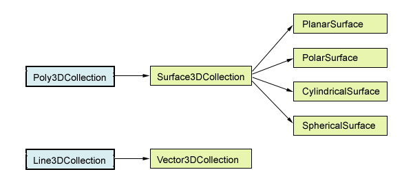

S3Dlib API¶
Classes¶
S3Dlib classes are derived from the Matplotlib Poly3DCollection and Line3DCollection classes.
Functions in s3dlib.surface Module¶
Functions in s3dlib.cmap_utilities Module¶
All functions in these modules return a Matplotlib Colormap .
Auxiliary Function¶
These functions are not contained in the S3Dlib package. They provide useful functionality but require the installation of additional open-source packages.